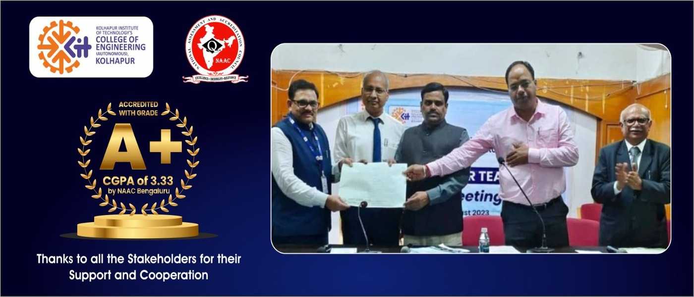
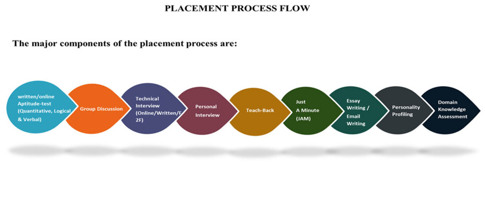
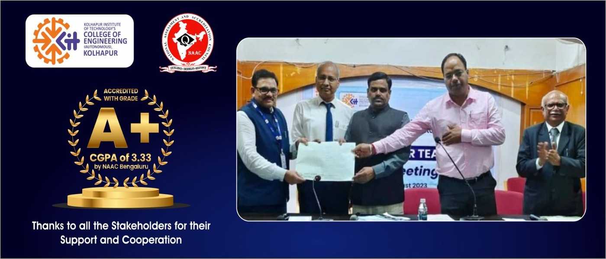
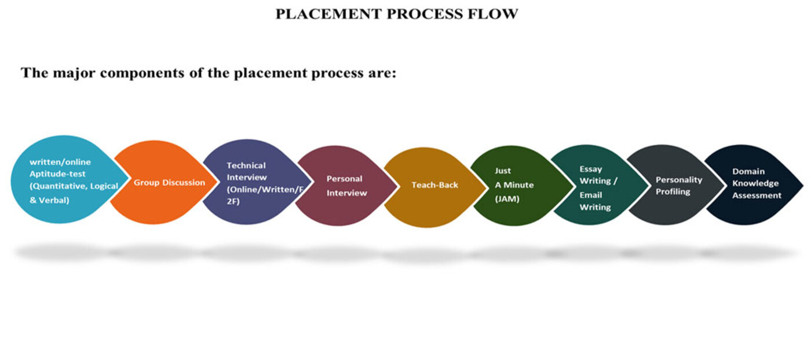

Kolhapur Institute Of Technolgoy's College of Engineeing (Autonomus),Kolhapur
Campus Connect- Way to Your Success
 



Campus connect way to your success
Campus pre-placement related information on the "Placement Preparations and Updates Website for College" can be an essential part of the system. It helps students and recruiters prepare for successful job placements and provides valuable insights into the pre-placement process. Here's a list of content and features related to campus pre-placement information:
1. Pre-Placement Training:
Offer details about any training programs or workshops conducted by the college to enhance students' employability skills.
2. Pre-Placement Talks:
Provide information about pre-placement talks or seminars where recruiters introduce their companies, job roles, and expectations.
3. Resume Building:
Tips and guidelines on creating an effective resume, including templates and sample resumes.
4. Interview Preparation:
Resources for interview preparation, such as common interview questions, answers, and tips on body language and communication skills.
5. Aptitude Tests:
Information about any aptitude or skill assessment tests that students may need to take as part of the placement process.
6. Group Discussions:
Guidance on participating in group discussions, including best practices and sample topics.